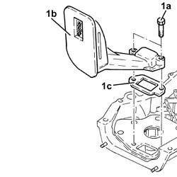

1084B26 emgine oil intake duct - r r
- Path
- Procedures > 10 ENGINE > 1084 ENGINE LUBRICATION > 1084B ENGINE OIL LUBRICATION CIRCUIT > 1084B26 emgine oil intake duct - r r
- Kind
- repair procedure (removal / refitting; the operation number is the code)
- Applies to
- all engines; all production periods
- Interactive page
- https://sloeber94.github.io/elrnDB-fDbl/en/#/2584289
Applies to: all engines; all production periods
 Removing
Removing
 Refitting
Refitting7055B54 under-engine guard - r r
1020A30 engine oil drain plug - replace
1020A20 crank case oil sump - r + r clean seals for sealant application
1084B28 engine oil intake pump - r + r with crankcase sump removed
Applies to: all engines; all production periods
Removing
RefittingPosition the car on the ramp.
Make sure that the ignition key is in the OFF position; then disconnect the battery negative terminal.
 | Name | Connector |
|---|---|---|
- | Battery | A1H |
Drain the air conditioner coolant circuit 0010T84 coolant for air conditioning system dehydrate and recharge .
Carry out 7055B54 under-engine guard - r r .
Carry out 4450B04 right front wheel r r .
Carry out .
Carry out 1092C10 power steering and/or self-levelling suspension pump drive belt - r + r .
Carry out 1092G10 single engine belt r r .
Carry out 1092A10 Crankshaft services PULLEY - R.R. .
Carry out 2110A60 .
Carry out 1020A20 crank case oil sump - r + r clean seals for sealant application .
Carry out 1020B10 cover of timing system with chain drive - r + r replace oil seal and gasket .
1. At the bench, undo the bolts (1a) and separate the engine oil inlet duct (1b) complete with gasket (1c) from the timing cover.

Applies to: all engines; all production periods
Removing
Refitting7055B54 under-engine guard - r r
1076B50 exhaust pipe attachment to engine - r + r
1020A20 crank case oil sump - r + r clean seals for sealant application
1084B28 engine oil intake pump - r + r with crankcase sump removed
Applies to: all engines; all production periods
Removing
RefittingProceed with the removal 5530B10 battery - r+r .
Proceed with the removal 5530B52 Battery DRIP TRAY/SUPPORT - R.R. .
Proceed with the removal 4450B12 front or rear wheels (two) - r+r .
Proceed with the removal 1044B10 fuel filter assembly - r + r or replace .
Proceed with the removal 7210E22 R.R. WINDSCREEN BASE TRIM .
Proceed with the removal 7055B54 under-engine guard - r r .
Proceed with the removal 7210E10 R.R. FRONT BUMPER .
Drain the air conditioning system 5040A10 Air conditioning refrigerant CIRCUIT - Draining and Refilling .
Proceed with the removal 4130B10 power steering fluid resevoir r r .
Proceed with the removal 1088B10 engine cooling tank - r + r .
Proceed with the removal 1004B10 POWER UNIT WITH MANUAL GEARBOX - R.R .
Proceed with the removal 1004D10 .
Proceed with the removal 1020A20 crank case oil sump - r + r clean seals for sealant application .
Proceed with the removal 1084B28 engine oil intake pump - r + r with crankcase sump removed .
Applies to: all engines; all production periods
Refitting
Removing1084B28 engine oil intake pump - r + r with crankcase sump removed
1020A20 crank case oil sump - r + r clean seals for sealant application
1020A30 engine oil drain plug - replace
Applies to: all engines; all production periods
Refitting
RemovingPlace the engine oil inlet duct, complete with gasket, back in its housing on the timing cover and secure it using the bolts.
Carry out 1020B10 cover of timing system with chain drive - r + r replace oil seal and gasket .
Carry out 1020A20 crank case oil sump - r + r clean seals for sealant application .
Carry out 2110A60 .
Carry out 1092A10 Crankshaft services PULLEY - R.R. .
Carry out 1092G10 single engine belt r r .
Carry out 1092C10 power steering and/or self-levelling suspension pump drive belt - r + r .
Carry out .
Carry out 4450B04 right front wheel r r .
Connect the battery negative terminal.
| Name | Connector |
|---|---|---|
- | Battery | A1H |
Refill the engine oil lubrication system 0010T11 engine oil check level and top up .
Refill the engine cooling system with coolant 0010T20 coolant change .
Fill the air conditioner coolant circuit 0010T84 coolant for air conditioning system dehydrate and recharge .
Carry out 7055B54 under-engine guard - r r .
Remove the car from the ramps.
Applies to: all engines; all production periods
Refitting
Removing1084B28 engine oil intake pump - r + r with crankcase sump removed
1020A20 crank case oil sump - r + r clean seals for sealant application
1076B50 exhaust pipe attachment to engine - r + r
Applies to: all engines; all production periods
Refitting
RemovingProceed with the refitting 1084B28 engine oil intake pump - r + r with crankcase sump removed .
Proceed with the refitting 1020A20 crank case oil sump - r + r clean seals for sealant application .
Proceed with the refitting 1004D10 .
Proceed with the refitting 1004B10 POWER UNIT WITH MANUAL GEARBOX - R.R .
Proceed with the refitting 1088B10 engine cooling tank - r + r .
Proceed with the refitting 4130B10 power steering fluid resevoir r r .
Drain the air conditioning system 5040A10 Air conditioning refrigerant CIRCUIT - Draining and Refilling .
Proceed with the refitting 7210E10 R.R. FRONT BUMPER .
Proceed with the refitting 7055B54 under-engine guard - r r .
Proceed with the refitting 7210E22 R.R. WINDSCREEN BASE TRIM .
Proceed with the refitting 1044B10 fuel filter assembly - r + r or replace .
Proceed with the refitting 4450B12 front or rear wheels (two) - r+r .
Proceed with the refitting 5530B52 Battery DRIP TRAY/SUPPORT - R.R. .
Proceed with the refitting 5530B10 battery - r+r .
Refill the engine cooling system with coolant 0010T20 coolant change .
Topics linked from this page (25)
- 0010T11 engine oil check level and top up
- 0010T20 coolant change
- 0010T84 coolant for air conditioning system dehydrate and recharge
- 1004B10 POWER UNIT WITH MANUAL GEARBOX - R.R
- 1004d10 power unit (manual gearbox), removed, remove and re-build
- 1020A20 crank case oil sump - r + r clean seals for sealant application
- 1020A30 engine oil drain plug - replace
- 1020B10 cover of timing system with chain drive - r + r replace oil seal and gasket
- 1044B10 fuel filter assembly - r + r or replace
- 1076B50 exhaust pipe attachment to engine - r + r
- 1084B28 engine oil intake pump - r + r with crankcase sump removed
- 1088B10 engine cooling tank - r + r
- 1092A10 Crankshaft services PULLEY - R.R.
- 1092C10 power steering and/or self-levelling suspension pump drive belt - r + r
- 1092G10 single engine belt r r
- 2110a60 manual gearbox/engine coupling bracket - r+r
- 4130B10 power steering fluid resevoir r r
- 4450B04 right front wheel r r
- 4450B12 front or rear wheels (two) - r+r
- 5040A10 Air conditioning refrigerant CIRCUIT - Draining and Refilling
- 5530B10 battery - r+r
- 5530B52 Battery DRIP TRAY/SUPPORT - R.R.
- 7055B54 under-engine guard - r r
- 7210E10 R.R. FRONT BUMPER
- 7210E22 R.R. WINDSCREEN BASE TRIM